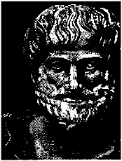

Ara ş t ı rma Serisi No.13
¯¯¯¯¯¯¯¯¯¯¯¯¯¯¯¯¯¯¯¯¯¯¯¯¯¯¯¯¯¯¯¯¯¯
2
Yüz Okuma Sanat ı
¯¯¯¯¯¯¯¯¯¯¯¯¯¯¯¯¯¯¯¯¯¯¯¯¯¯¯¯¯¯¯¯¯¯
belirlemektedir. Onlar, bir dizi "uzun ömürlülük belirtileri"ni de tespit etmi ş ler. Çinlilerin fizyognomi sistemi bugün de incelenmekte ve geli ş tirilmektedir. 1.2. Aristo'nun Fizyognomiye İ li ş kin Görü ş leri
Fizyognomi ile ilgili bilgilere Hipokrat, Aristo ve Pluto gibi eski Yunan dü ş ünürlerinin eserlerinde rastlanm ı ş t ı r. Aristo, fizyognomiyi ki ş ilerin ruh halini ö ğ renmek için kullan ı rken, Hipokrat bu usulle hastalara te ş his koymu ş tur. Onun ölmü ş insan ı n yüz ş eklini tasvir edi ş i bugün de doktorlar taraf ı ndan "Hipokrat maskesi" olarak kullan ı lmaktad ı r.

Aristo'nun "De Natura Animalium" (1. Kitap) isimli çal ı ş mas ı nda beden ve yüz yap ı s ı ile insan ı n karakter özellikleri aras ı nda ba ğ lant ı kurulmaktad ı r.
Aristo'ya göre, insan ı n beden ve yüz yap ı s ı n ı n belli bir hayvana benzemesi, onun karakter özelliklerini ortaya koymaktad ı r. Aristo insan ı n yüz yap ı s ı , gözleri, aln ı , kafa yap ı s ı , derisinin rengi, saç ı n ı n rengi, gözünün rengi, bedenin tüy örtüsü, sesinin tonu, yürüyü ş ü, beden hareketleri, bak ı ş lar ı , boyu ile ilgili karakter özelliklerini hayvanlardaki benzer özelliklerle k ı yaslamaktad ı r.
Aristo'ya göre, belli özelli ğ e sahip insanlar, benzeri olduklar ı hayvanlar ı n karakter özelliklerini ta ş ı maktad ı rlar. Yüz yap ı s ı ve insan karakteri aras ı ndaki ili ş ki, Aristo'nun eserinde a ş a ğ ı daki ş ekilde geçmektedir .
Dudaklar
Dudaklar ı ince ve a ğ ı z kenarlar ı , dudaklar ileri uzand ı ğ ı nda üst duda ğ ı n alttakinin üzerine ç ı kacak ş ekilde gev ş ek olan insanlar alçakgönüllüdürler. Bu aslan tipine uygun gelmektedir. Ayn ı ş eyi büyük ve küçük köpeklerde de görebiliriz. Dudaklar ı ince, sert ve köpek di ş leri hizas ı nda yukar ı ya do ğ ru çekilmi ş olan insanlar a ş a ğ ı ve baya ğ ı d ı rlar. Bu domuz tipine uygun gelmektedir. Dudaklar ı kal ı n ve üst dudak alttakinin üzerine ç ı kan insanlar aptald ı rlar. Bu e ş ek ve maymun tipine uygun gelmektedir. Üst duda ğ ı ve üst dama ğ ı öne do ğ ru ç ı kan insanlar huysuz ve kavgac ı d ı rlar. Bu, köpek tipine uygundur.
Burun
Burun deliklerinin duvarlar ı kal ı n olan insanlar iyi kalplidirler. Bu öküz tipine uygun gelmektedir. Burun deliklerinin duvarlar ı ince olan insanlar h ı rç ı n bir yap ı ya ve karaktere sahiptiler; bu köpek tipine uygun gelmektedir. Burun delikleri dairevi olan insanlar alçak gönüllüdürler. Bu durum aslanlarla benzerlik olu ş turmaktad ı r.
__________________________________________________________________
© WWW.MAXIMUMBILGI.COM